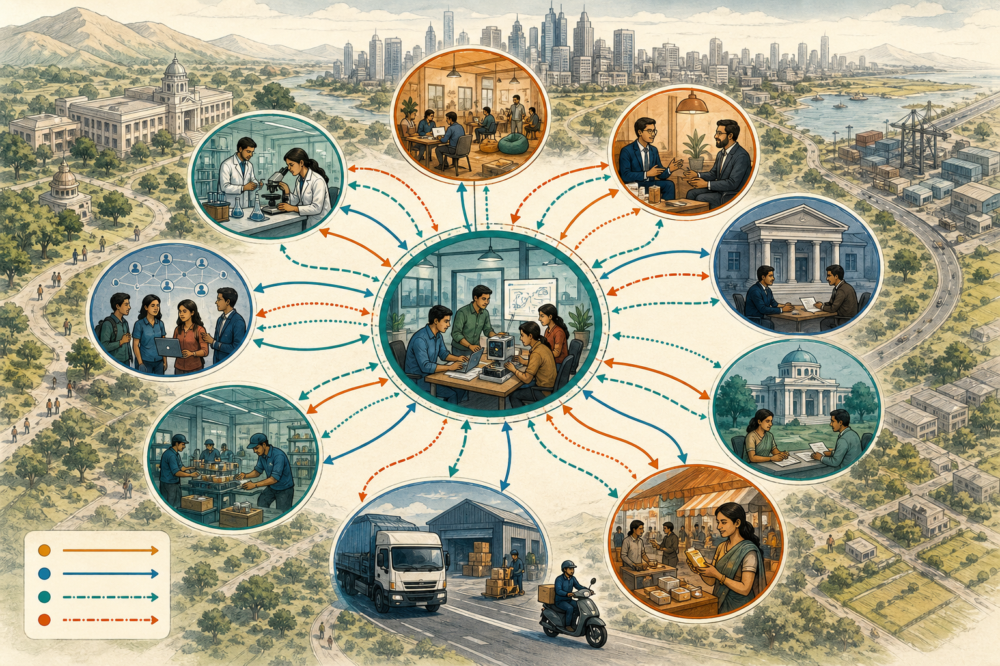

The entrepreneurial environment includes the market, technology, finance, institutions, infrastructure, culture, policy, competition, education and networks around a venture.
Learning outcome
Describe entrepreneurial environment and growth factors.
Estimated time
4–6 minutes

Growth Network
Explore the model
The Venture Growth Network
Use the controls to inspect each idea. Visited controls remain marked
during this page visit.
Read the wider context
Macro environment
Economic conditions, policy, technology, demography and culture shape demand, cost, legitimacy and the rate at which new solutions can be adopted.
Understand market forces
Industry environment
Competitors, suppliers, buyers, substitutes and entry barriers influence bargaining power, differentiation and the resources needed to enter and survive.
Access enabling networks
Entrepreneurial ecosystem
Universities, incubators, laboratories, mentors, banks, investors, firms and public agencies can provide knowledge, testing, finance, legitimacy and market access.
Strengthen the engine
Venture growth engine
Growth requires repeated customer acquisition, reliable value delivery, cost control, resource access and adaptation. Expanding demand without delivery capacity can destroy trust.
Improve the limiting flow
Find the current constraint
Demand, physical delivery, information and cash are linked flows. Case: India's startup ecosystem illustrates distributed support. Apply: Which flow would become the bottleneck first in a rapidly growing hardware venture?
Contextual case
Connect the concept
Case connection: The National Startup Awards 2023 resource-pack snapshot can be used qualitatively to discuss district diffusion, women-led ventures, policy simplification and sectoral innovation without relying on undated statistics.
Misconception watch
Do not confuse
Common mistake: Treating growth as revenue increase alone or assuming that more ecosystem organisations automatically remove venture bottlenecks.
Ungraded self-check
Make the decision explicit
Draw a five-node ecosystem for a campus venture and identify the relationship that needs evidence before growth.
A useful response should:
name the user or stakeholder and the evidence available;
separate assumptions from known facts;
identify one responsible next action or test.
This is formative feedback only; no answer or score is stored.
Sources, alignment, and template credit
Alignment: CO1 - Discuss the fundamentals of entrepreneurship;
K2 - Understand.
U21CAX01_EDS_Study_Material_Textbook_Edition_Concept_Expanded.docxUnit I, I.8 Entrepreneurial environment and growth and Venture as an operating system
Environment levels, ecosystem, growth engine and four-flow bottleneck view
Launching New Ventures: An Entrepreneurial Approach, Kathleen R. AllenNew-venture system
Environment, founding team, venture concept and organisation
Startup and New Venture Management, Aurangabadkar and SinghChapter 1
Entrepreneurial growth and environment
Template credit: Sidebar tabs interaction template by David
Visible instructional text is paraphrased from the supplied study
material and designated references.